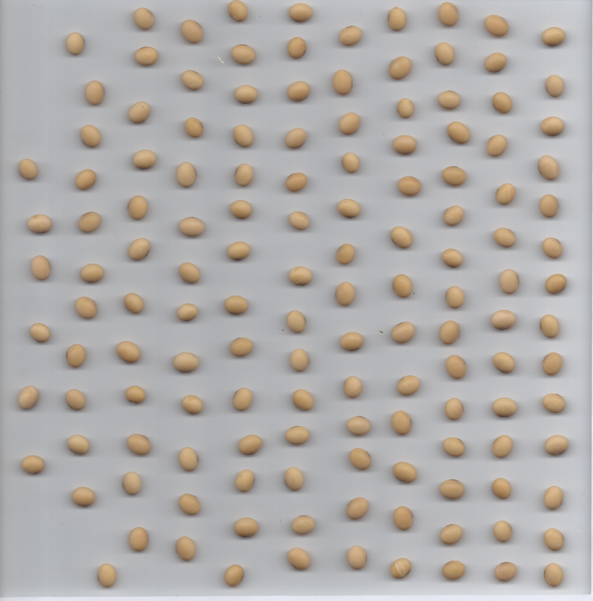
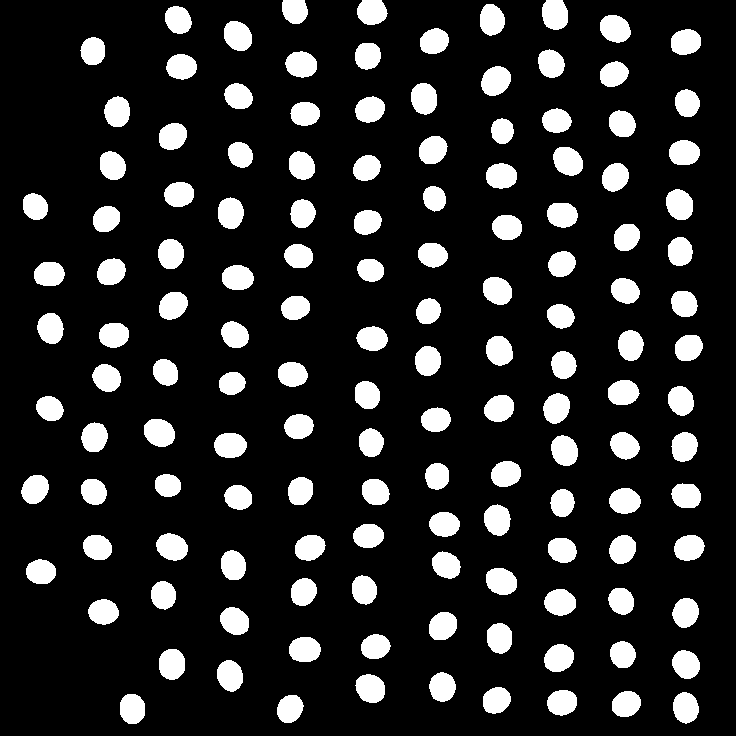
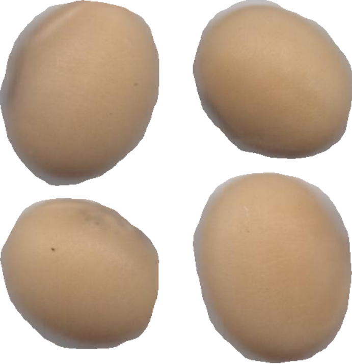
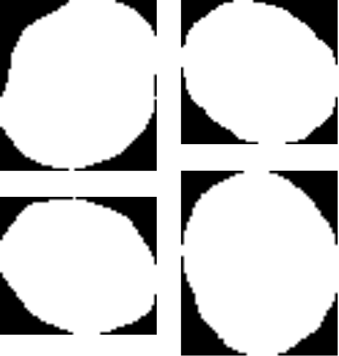
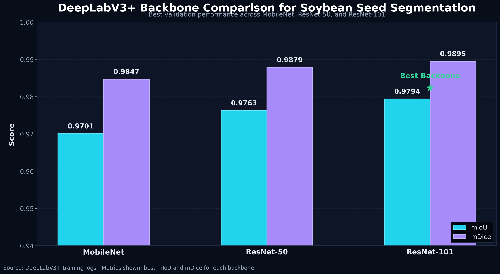

Problem Statement
Analisis visual biji kedelai membutuhkan area objek yang bersih agar fitur warna dan morfometri tidak tercampur dengan latar belakang. Jika segmentasi dilakukan secara manual, prosesnya lambat, tidak konsisten, dan sulit diterapkan pada banyak citra. Project ini membangun pipeline segmentasi otomatis agar area biji dapat dipisahkan secara akurat dan hasilnya dapat digunakan untuk ekstraksi fitur serta proses prediksi kemiripan visual terhadap varietas tetua.
Objective
Dataset & Acquisition
Scanner membantu menjaga posisi objek tetap datar, pencahayaan seragam, dan bentuk biji lebih stabil dibanding pengambilan menggunakan kamera bebas.
Tools & Technologies
Workflow & Process
Mengumpulkan citra biji kedelai menggunakan flatbed scanner resolusi tinggi dan pencahayaan terkontrol.
Melakukan cropping awal, resizing, labeling, dan penyiapan citra untuk pelatihan segmentasi.
Membuat mask biner sebagai ground truth untuk membedakan seed dan background.
Menerapkan flipping horizontal/vertical serta rotasi 90°, 180°, dan 270° untuk menambah variasi data latih.
Melatih DeepLabV3+ menggunakan backbone ResNet-50, ResNet-101, dan MobileNet.
Mengevaluasi model dengan mIoU, mDice, IoU/bg, dan IoU/seed.
Menggunakan mask untuk menghasilkan seed cropped dan seed mask berpasangan sebagai dataset turunan per-biji.
Backbone Comparison
| Backbone | Best Trial | Batch Train | Batch Val | Epoch | Train Loss | Val Loss | mIoU | mDice | IoU/seed | Status |
|---|---|---|---|---|---|---|---|---|---|---|
| ResNet-50 | Trial 6 | 18 | 10 | 30 | 0.0142 | 0.0139 | 0.9763 | 0.9879 | 0.9575 | — |
| ResNet-101 | Trial 4 | 18 | 14 | 35 | 0.0128 | 0.0113 | 0.9794 | 0.9895 | 0.9630 | Best |
| MobileNet | Trial 2 | 18 | 10 | 35 | 0.0189 | 0.0183 | 0.9701 | 0.9847 | 0.9465 | Lightweight |
Visualizations / Screenshots

Original Image — Full Soybean Scan
Segmentation Result — Seed Area Detected
Cropped Seed Output — Based on Segmentation
Cropped Seed Mask — Binary Mask Output
Challenges
What I Learned
Segmentasi yang baik membuat ekstraksi fitur menjadi lebih bersih karena fitur hanya dihitung dari area biji.
Perbandingan backbone menunjukkan pentingnya mencari keseimbangan antara performa dan kebutuhan komputasi.
Loss saja tidak cukup; mIoU, mDice, dan IoU/seed lebih relevan untuk segmentasi objek.
Project riset lebih mudah dipahami recruiter dengan menampilkan problem, pipeline, result, dan visual output.